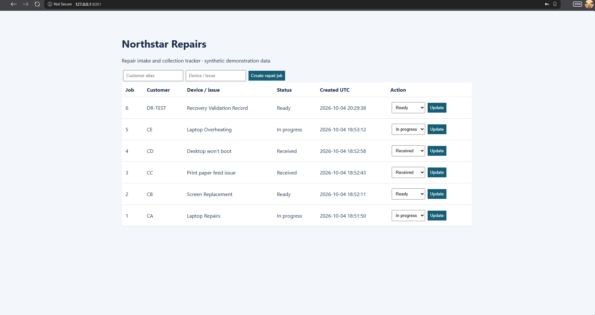
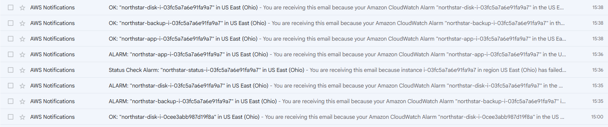

Completed infrastructure lab · October 2026
Northstar Repairs
From one Proxmox VM to an AWS deployment with a tested rebuild and restore workflow.
12min
Operator-measured recovery
in one lab exercise
The problem
A synthetic repair shop's job register depended on a single VM. The application and its SQLite data needed a recovery path beyond that server.
The work
Migrate the workload to AWS, define infrastructure in Terraform, separate backups into versioned S3 storage and test replacement-server recovery.
The result
All six validation jobs restored, including DR-TEST. SQLite integrity returned ok. Application-health alerts delivered by email.
See the evidence

